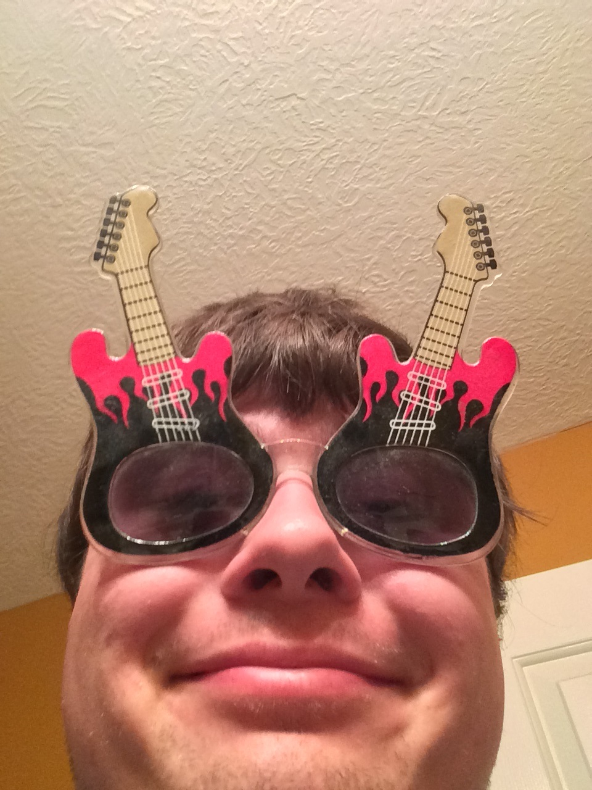

Shady Shades Rock N' Roller Sunglasses
Shady Shades now presents a new set of sunglasses that gives you good vibrations and pumps up your coolness up to an 11!
The Rock N' Roller Shades are a gnarly gift for any hard rock/heavy metal fans which protect you from intense UV rays from the sun and look cool at the same time!